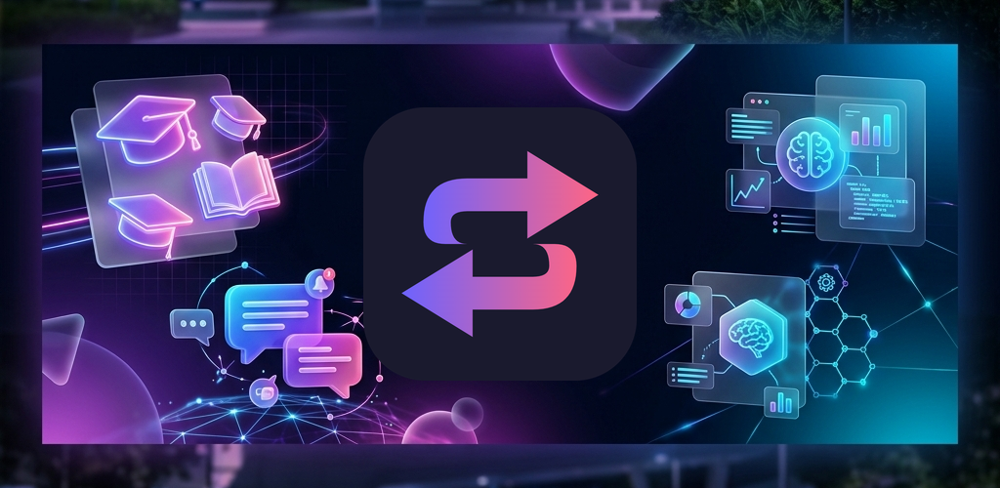
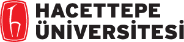

Google Play kapalı test sürümü
Üniversite kararını veriye ve gerçek deneyimlere dayandır.
Üniversiteleri, bölümleri ve şehirleri karşılaştır. Doğrulanmış öğrenci yorumlarını oku, kampüs çevresini keşfet ve tercih sürecini tek yerde yönet.
- Ücretsiz keşif
- Gerçek öğrenci yorumları
- Android kapalı test

Türkiye çapında veri
Tercih sürecinde ihtiyacın olan bilgiler tek uygulamada.
Aralarında


 ve daha fazlası
ve daha fazlası

Neler yapabilirsin?
Sadece puana değil, yaşayacağın deneyime de bak.
ÜniSeç; akademik verileri, öğrenci deneyimlerini ve şehir yaşamını aynı karar ekranında buluşturur.
Karşılaştır
Üniversite, bölüm ve şehirleri yan yana gör.
Puanları, sıralamaları, öğrenci değerlendirmelerini ve kampüs olanaklarını aynı yerde karşılaştır.
Gerçek öğrenci yorumları
Doğrulanmış öğrencilerin eğitim, sosyal yaşam ve altyapı deneyimlerini oku.
Kampüs çevresini keşfet
Kafeleri, kütüphaneleri, çalışma alanlarını, yurtları ve öğrenci mekânlarını bul.
YKS puanını hesapla
Netlerini gir, yerleştirme puanını hesapla ve seçeneklerini daha bilinçli değerlendir.
Tercih listeni oluştur
İlgilendiğin bölüm ve üniversiteleri kaydet, listeni düzenle ve paylaş.
Yapay zeka destekli özet
Karşılaştırma sonuçlarını daha hızlı yorumlamak için öne çıkan farkları anlaşılır biçimde gör.
Birlikte iyileştirelim
ÜniSeç şu anda kapalı test aşamasında.
Erken kullanıcı olarak uygulamayı deneyebilir, karşılaştığın sorunları ve geliştirme önerilerini doğrudan ekibimize iletebilirsin.
Katılım için e-posta gönder-
01
Bize e-posta gönder
Google Play hesabında kullandığın adresi uniseccapp@gmail.com üzerinden bize ilet.
-
02
Test bağlantısını aç
Hesabın test grubuna eklendikten sonra gönderilen katılım bağlantısını kullan.
-
03
Deneyimini paylaş
Uygulama içindeki geri bildirim alanından sorunları ve önerileri bize gönder.
Merak edilenler
Sık sorulan sorular
Kapalı test ve ÜniSeç kullanımıyla ilgili temel bilgiler.
Kapalı teste nasıl katılabilirim?
uniseccapp@gmail.com adresine Google Play hesabında kullandığın e-posta adresini ilet. Test grubuna eklendikten sonra Google Play sayfasından uygulamayı açabilirsin.
Uygulamayı Google Play'de neden bulamıyorum?
Kapalı test sürümleri mağaza aramasında görünmeyebilir. Önce Google Play hesabının test grubuna eklenmesi gerekir; ardından uygulamayı doğrudan bağlantı üzerinden açabilirsin.
ÜniSeç ücretsiz mi?
Temel keşif özellikleri ücretsizdir. Bazı gelişmiş karşılaştırma ve yapay zeka özellikleri kullanım sınırlarına veya üyelik planlarına tabi olabilir.
Hesabımı ve verilerimi nasıl silebilirim?
Uygulama içindeki hesap ayarlarından silme işlemini başlatabilir veya hesap silme sayfasını kullanabilirsin.